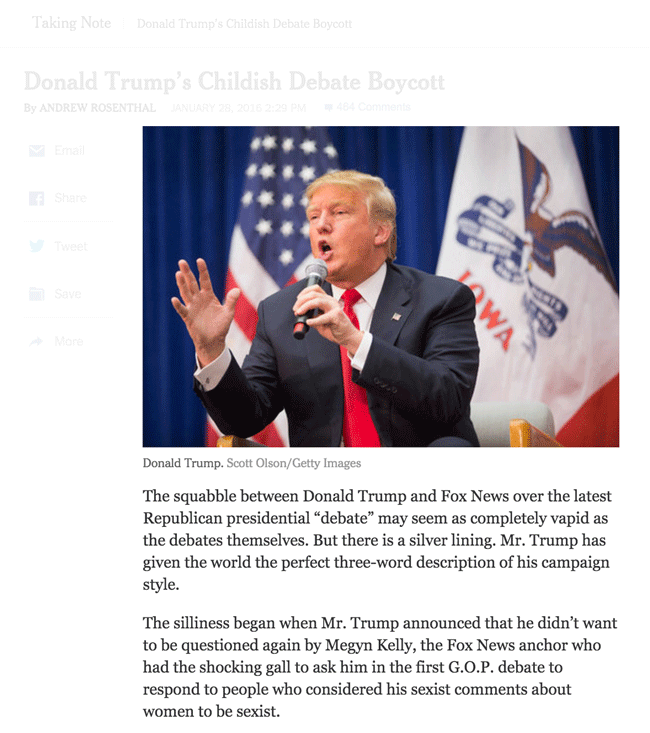

Page layout for the Web
Before HTML5, the W3C studied how pages were organized.
Many would section off content using generic <div> tags, with attribute values describing the section's purpose.
The W3C introduced semantic tags to accomodate these structural patterns.
header
- W3C:
represents a group of introductory or navigational aids
- contains a page or section heading
- may include a search form or logo
- may (but does not have to) include
nav
header
nav
- W3C:
represents a section with navigation links
- navigation links should point to
- other pages
- parts within the page
- not all links need to be part of a
navelement
It is common to see a list within a nav as it 'lists' sections of a site.
nav
main
- W3C:
represents the main content of the body of a document
- there can be only one
mainper page - likely contains
<section>,<article>,<aside>
main
section
- W3C: represents a themed group of content in a document
- typically includes a heading
- is not a generic element
section (example A)
section (example B)

section (example C)
article
- W3C:
represents an independent item section of content
content in the article element should be independently distributable or reusable
- forum post
- magazine or newspaper article
- blog entry
article (layout)
article (content)

aside
- W3C:
content ... tangentially related to the content around itself
content considered separate from the main content of the page
- sidebar
- pull quote
- advertising
- data tables
- figures
aside

footer
- W3C:
don't necessarily appear at the end, though they usually do
typically contains information about its page, section
- author, contact information
- links to related documents
- copyright information
- secondary navigation